Disassembly and Reassembly
DISASSEMBLY/ASSEMBLY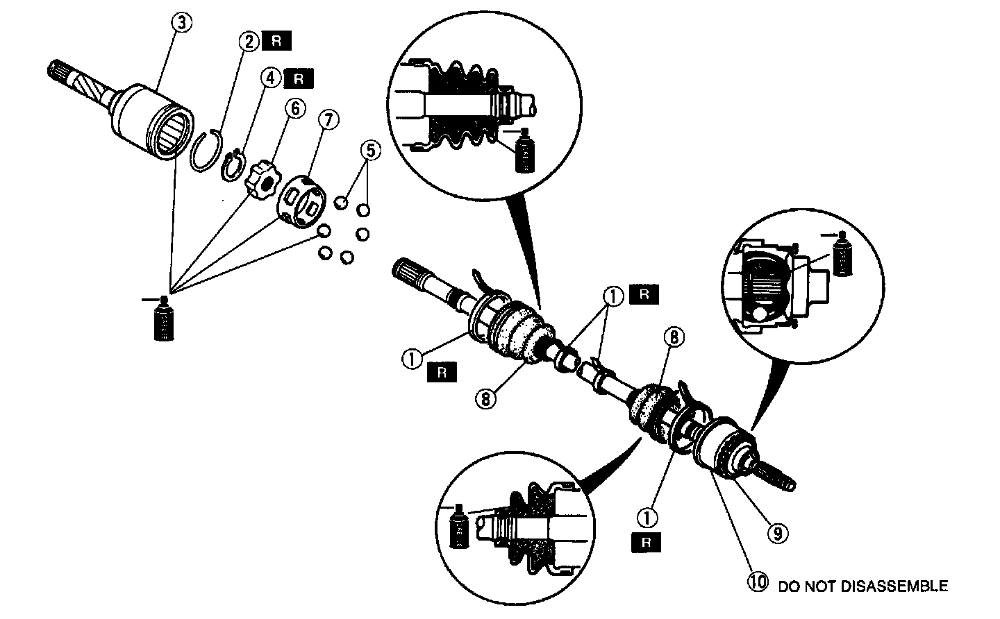
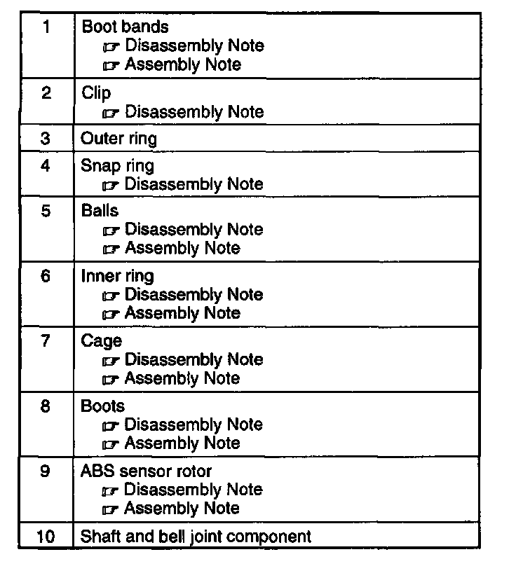
1. Disassemble in the order indicated in the table.
2. Assemble in the reverse order of disassembly.
Boot Bands Disassembly Note
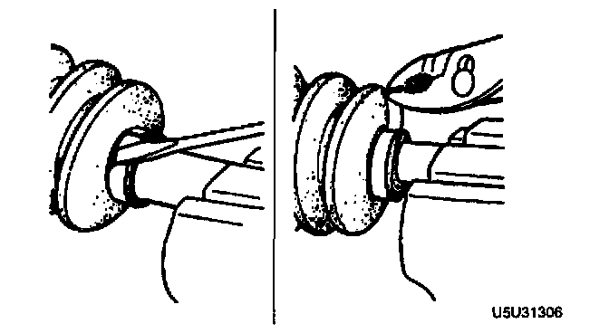
- To remove the boot bands, pry up the locking clip by using a screwdriver, then raise the end of the band.
Clip Disassembly Note
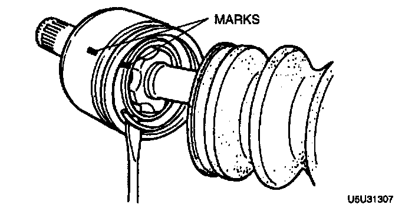
1. Mark the drive shaft and outer ring with paint as shown.
2. Remove the clip.
Snap Ring Disassembly Note
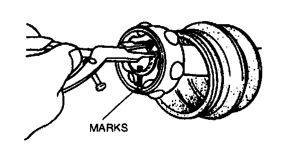
1. Mark the drive shaft end and inner ring with paint as shown.
2. Remove the snap ring by using snap-ring pliers.
Balls, Inner Ring, Cage Disassembly Note
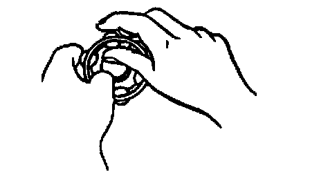
1. Insert a screwdriver between the inner ring and cane to remove the balls.
2. Mark the inner ring and cage with paint.
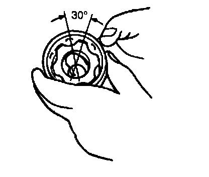
3. Turn the cage approximately 30�, then pull it away from the inner ring.
Boots Disassembly Note
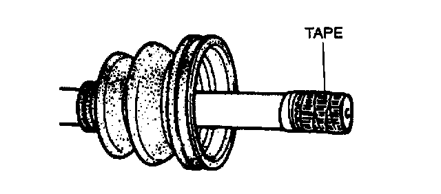
1. Wrap the shaft splines with tape.
2. Remove the boot.
ABS Sensor Rotor (with ABS) Disassembly Note
Note:
- The sensor rotor does not need to be removed unless replacing it.
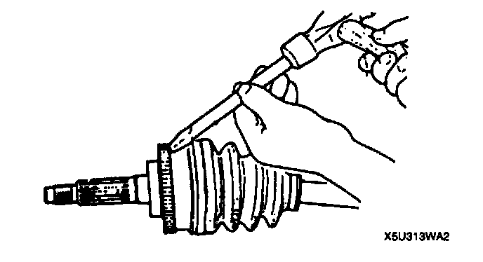
- Tap the ABS sensor rotor off the bell joint outer race by using a chisel.
ABS Sensor Rotor (With ABS) Assembly Note
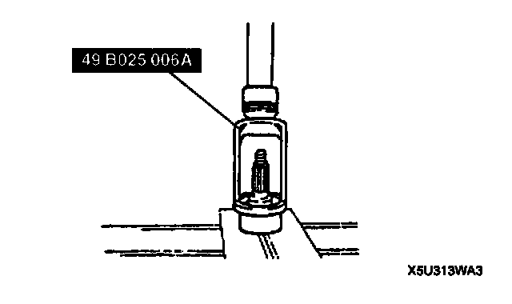
- Press in the ABS sensor rotor by using the SST.
Boots Assembly Note
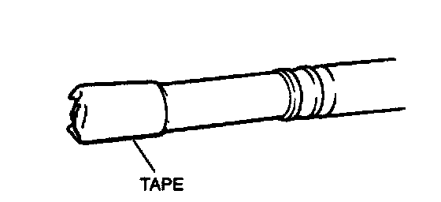
1. Before putting the boot onto the shaft, wrap the shaft splines with tape.
Note:
- The initials DOJ and BJ are stamped on the wheel side and differential side boots respectively.
2. Install the wheel side and differential side boots, noting the shape and size of each one in the figure.
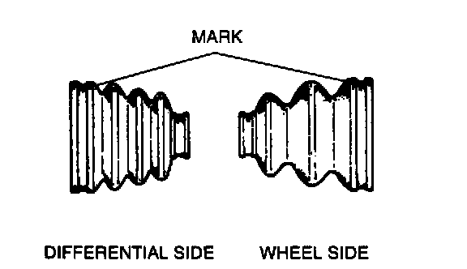
Outer diameter of large boot end
Differential side: 87.4 mm (3.441 inch)
Wheel side: 90.8 mm (3.575 inch)
Cage, Inner Ring, Balls Assembly Note
1. Align the marks and install the balls to the inner ring.
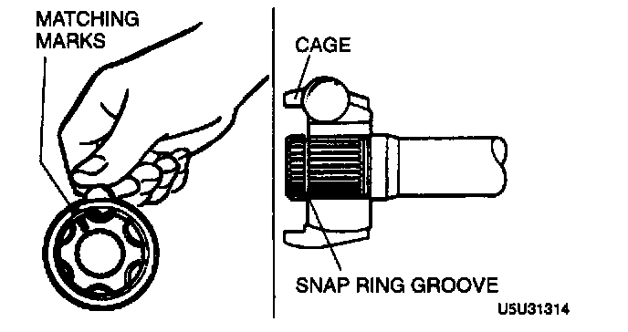
2. Install the cage, inner ring, and ball component to the drive shaft in the direction shown in the figure. The larger diameter of the cage should be facing the snap ring groove.
3. Install a new snap ring in the drive shaft snap ring Groove.
4. Apply the specified grease (supplied in the boot kit) to the joints and boots.
Total quantity
Differential side: 85-105 grams (3.00-3.71 ounces)
Wheel side: 55-75 grams (1.94-2.65 ounces)
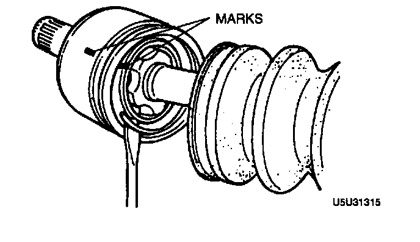
5. Align the marks, then install a new clip.
Boot Bands Assembly Note
1. Verify that the boots are not dented or twisted.
2. Set the drive shaft to the standard length.
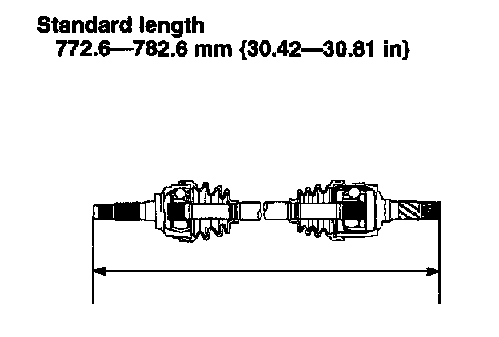
Standard length 772.6-782.6 mm (30.42-30.81 inch)
3. Release any trapped air from the boots by carefully lifting up the small end of each boot with a cloth-wrapped screwdriver.
4. Verify that the drive shaft length is within the standard.
5. If the drive shaft length is not within the standard, return to step 1.
6. Fold the new band back by pulling on the end of it with pliers. The band should be folded in the direction opposite the forward revolving direction of the drive shaft.
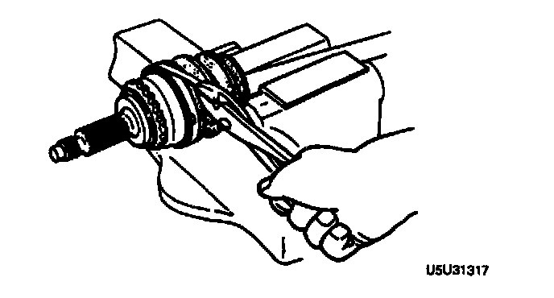
7. Lock the end of the band by bending the locking clips.